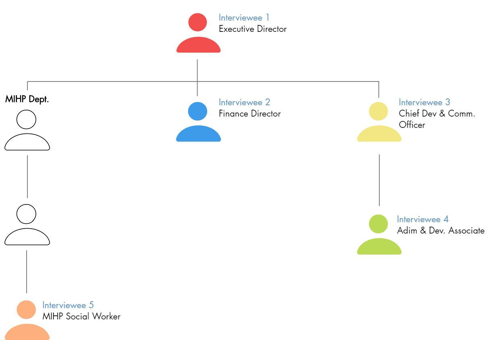
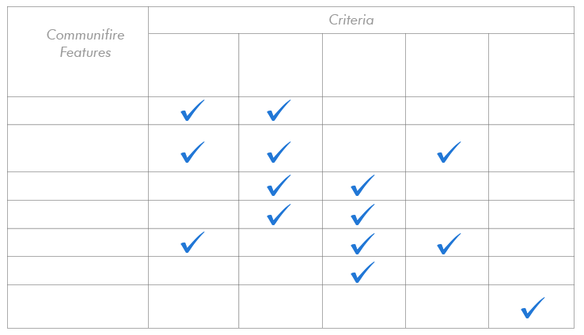
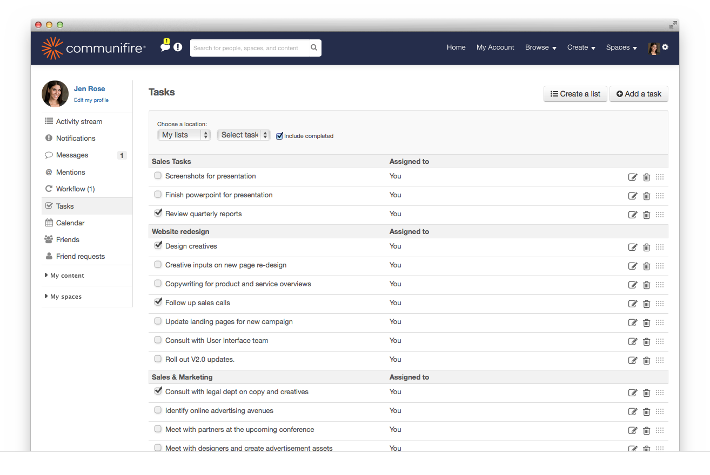

The Corner Health Center - Donor Perfect
Contextual Inquiry and Consulting
Role: UX Researcher, Client Contact & Program Manager
Overview
Client
The Corner Health Center located in Ypsilanti, Michigan is a healthcare non-profit that strives to provide high-quality primary healthcare, education, and support services to young people in the age group of 12 to 25 years. Their target group primarily fall under low-income communities.
Consulting Team
- Nalin Bhatia (Masters, HCI)
- Kesava Karthik Kota (Masters, HCI)
- June Park (Masters, Data Science)
- Sangho Eum (Masters, Data Science)
Process
Background Study
To extract information about their work and challenges faced, a comprehensive background study was done on grant management at non-profits. Areas with challenges and opportunities was identified which are listed below.
Challenge Areas
- Staff Organization
 Choosing the right product
Choosing the right product- Communication and Engagement
Opportunity Areas
- Categorizing funders
 Cultivating relationships
Cultivating relationships Tracking interactions
Tracking interactions- Tracking funder metrics
User Interviews
Background
User Interviews of the following staff members were conducted in accordance with their respective roles as shown in the figure below. Organizational fit of the interviewees was analyzed before to understand the workflow between the different members. A comprehensive interview protocol was developed based on our background research and problem definition.

Based on background research and analysis, an interview protocol was developed which touched upon the following 3 categories addressing the given overarching questions:
- Management and Coordination: What is the "people-side" workflow in coordinating grants and donations?
- Grant Management: How does the Corner Health Center use Donor Perfect to track and manage grant details?
- Communication and Outreach: How connected does the organization feel with their donors?
Each interview session was recorded, interpreted and annotated to identify key insights, strengths, and areas for improvement.
Affinity Wall
After consolidating notes from each interview, we gathered 350 data points were organized into information clusters called affinity notes. Each cluster was further organized into a meta cluster which was again organized under a higher level cluster and so on. The highest level of information provided us with key pain-points and problems existing in our client organization. The images below gives an overview of what our version of affinity wall looked like.

Recommendations
The findings of the Contextual Inquiry process presented mismanaged collaboration and information gaps as a key underlying problem. The inconsistent internal communication and collaboration was the target issue which aimed to resolve. To overcome this problem, we essentially identified ways that could improve their internal collaboration, and recommended the use of an Internal Collaboration and Communication software.
Recommendation 1: Collaboration Software
In deciding upon the appropriate collaborative tool, it was important to consider certain criteria relevant to the organization, and considering its nonprofit status. The criteria considered were not only to ensure successful communication and collaboration, but also features that a non-profit organization can benefit from which other tools might not offer.
Communifire - an intranet software was chosen since several of it's feature fulfilled our considered criteria:


Conclusion
Our study revealed some hidden problems that stems from internal and external communications, which was impeding an effective workflow of the organization. From our analysis, we concluded that main problems of the Corner Health Centercould be categorized as and in order to address all of these categories of concerns, we have made in total three recommendations:
- Using a collaboration software
- Utilizing an integration add-on tool for QuickBooks and DonorPerfect
- Establishing donor metrics
We firmly believe that our recommendations will effectively aid the Corner Health Center in current obstacles in efficient workflow, and furthermore benefit the organization both internally and externally.